回路図を描いて、動かして、
基板にして、発注データまで。
circuitCad は、回路図・SPICEシミュレーション・ブレッドボードでの試作・基板設計・Gerber出力・届いた基板の電源投入までを1本にまとめた、初学者向けの回路CADです。「学ぶ → 実験する → 基板を発注する → 動かす」を、ソフトを乗り換えずにつなげます。画面は日本語と英語に対応しています。
アルファ版・無料・インストール不要。zip を展開して circuitCad.exe を起動するだけです。
署名がないため、Windows の SmartScreen が警告を出すことがあります。「詳細情報 → 実行」で起動できます。
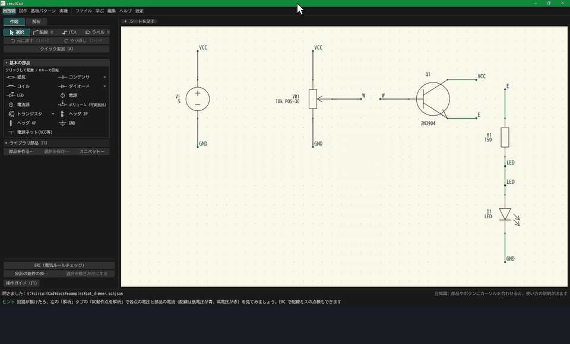
こんな人に
- 電子工作や回路の勉強を始めたばかりで、KiCad や LTspice は入り口が高いと感じている人
- 回路図を描くだけでなく、動かして確かめたい人
- 「なぜその値なのか」を、計算の手順つきで知りたい人
- 自分で設計した基板を、発注するところまでやってみたい人
1本でつながる
回路図→シミュレーション→試作 (ブレッドボード)→基板→Gerber・BOM→実機
画面も、作る順に「回路図・試作・基板・実機」の 4 つのタブに分かれています。
初学者のための作り
迷わない画面
ボタンにポインタを置くと説明が出て、配線ミスや定格オーバーは「原因と直し方」つきで知らせます。日本語と英語を切り替えられます。
学びながら進める
学習パス9本、手順つきレッスン90本以上、基板のレッスン8本、判定つきの「作ってみよう」10本。結果を予想する問いも出ます。
ブレッドボードで試す
回路図の部品を差す穴を自動で並べ、電源を入れると差したとおりに動きます。LED が光り、ブザーが鳴り、定格を超えると焦げます。
壊して学べる
部品やピンを断線・ショートさせて、影響をシミュレーションで比べられます。基板に故障を仕込んで直す練習もできます。
見ながら理解する
電圧は配線の色、電流は矢印で、回路図の上にそのまま重ねて表示。AC・過渡・ノイズ・位相余裕などの解析も備えています。
発注まで行ける
自動配線・DRC・3D表示から、JLCPCB / PCBWay / OSH Park のルールに合わせた発注前チェックと Gerber 出力まで。
届いた基板を動かす
組み立て → 電源投入 → 測る → 合否 → 修理 を順に案内。最初の電源投入では、正常なら流れる電流と電流制限の値を出します。
部品とサンプル付き
260部品以上 (メーカーの実物の抵抗・コンデンサ・LED・MOSFET など) と130本以上のサンプル回路を同梱。KiCad と LTspice の回路図も取り込めます。
特長の紹介
結果が、回路図の上に出る
解析を実行すると、電圧は配線の色と数字で、電流は矢印で、描いた回路図にそのまま重なります。別の窓のグラフと見比べる必要がありません。
- 部品の値をスライダーで動かすと、「自動で再計算」で結果がすぐ変わる
- 抵抗や IC の発熱・LED の電流など、定格を超えそうな所を警告
- 結果は ngspice と比べて確かめています (精度のページ)
ブレッドボードに差して、電源を入れるalpha.12 から
「試作」のタブは、回路図の部品をブレッドボードのどの穴に差すかを自動で並べます。電源を入れると、差したとおりの回路が動きます。
- つながっている穴が光り、部品やジャンパー線はドラッグで差し替え。回路図と違う差し方は赤い丸で知らせる
- 電源の電圧・周りの温度・ボリュームを、動かしたままつまみで変えられる。スイッチと押しボタンはクリック
- ブザーはスピーカーから鳴り、定格を超えた部品は焦げて回路の中でも壊れる
- テスター (直流の電圧) とオシロ (電圧の時間の変化) の道具つき
予想してから、確かめる
レッスンは、手順を読む前に「どうなると思うか」を聞きます。予想してから解析すると、当たっても外れても、なぜそうなるかが残ります。
- オームの法則から、安定化電源・Arduino 互換ボード・スイッチング負荷・電池・信号・部品・修理まで、学習パス9本
- デジタル回路は、スイッチをクリックしながら High / Low の色と真理値表で確かめる
- 各レッスンに「実物との違い (モデルの限界)」と「実機で確かめよう」(12V 以下の実験) つき
- 「作ってみよう」は目標だけを示し、自分で作った回路をシミュレーションで判定
- 用語集 (読み・別名で引ける) と、レッスンの用語からの呼び出し
「こう作りたい」を表に書くと、基板で点検される
回路図に、ネットの役割 (大電流・スイッチング・アナログ信号など)、線幅と電流、近くに置く部品、離す部品、配線の道筋で測る値を、理由と一緒に書いておけます。
- 基板に取り込むと、ネットクラス・自動配置・自動配線・点検に使われる
- 行ごとの結果 (満たした / まだ) が、回路図と基板の両方に出る
- 承知した例外も、理由つきで残せる
発注の前に、もう一度確かめる
「発注の準備」は、発注先を選んで、その店のルールで基板を見直し、製造データを書き出すところまでを順に案内します。
- JLCPCB / PCBWay / OSH Park のルールに合わせた点検 (線幅・間隔・穴・シルク・マスク)
- 基板の外の部品、未配線、電流に対して細い配線、サーマルビアの不足などを、直し方つきで指摘
- 出来上がりのプレビュー、Gerber・ドリル・BOM・部品位置の書き出し、注文の手順
届いた基板に、安全に電源を入れるalpha.12 から
「実機」のタブは、届いた基板を 組み立て → 電源投入 → 測る → 合否 → 修理 の順に案内します。手順ごとに、基板の配置図で付ける部品や測る点が光ります。
- 回路図から「正常なら流れる電流」の範囲と、電源の電流制限に入れる値を出す
- 測った電流が多い・少ないときに、疑う所を並べる
- 背の低い部品からのはんだ付けの順と向きの印を、印刷用の組み立て表に
3D で見て、ケースに収まるか確かめる
部品の高さとはんだマスクの色まで、出来上がりを立体で確かめられます。ケースの高さを入れると、入らない部品が赤くなります。
- GPU で描くなめらかな面と陰影。STEP の書き出し (曲面・部品ごとの組み立て)
- ケースの STEP を重ねて、ぶつかる部品を出す。DXF の書き出しと読み込み
- メーカーの STEP ファイルを部品の形として取り込み
- 複数の基板を 1 つのプロジェクトに入れて、3D で重ねる
- 回路図・基板・3D で、選んだ部品とネットが連動して光る
機能の一覧
分野ごとにまとめています。見出しを押すと開きます。
回路図描く・点検する
- 部品の配置と配線 (部品を動かすと配線が付いてくる)、Undo / Redo、コピーと貼り付け
- 複数のシート、階層設計 (同じ回路を記号にして何回も使う)、バス (
D[0..7])
- ERC (配線ミスの点検)。指摘には原因と直し方がつき、意図した未接続には NC の印。描きかけの範囲は点検から外せる
- スニペット (選んだ部分を保存して再利用)、クイック追加 (名前で探して置く)
- 図枠 (タイトル・版・日付・作者・メモ)、SVG と PDF への書き出し
- 電源は値に応じて、直流 / 交流 (正弦波) / パルスの記号で描き分け
シミュレーション解析の種類
- DC 動作点、過渡 (波形の曲がり具合で時間刻みを自動で細かく)、AC (ボード線図)、DC スイープ
- ノイズ、極と零、根軌跡、ループゲイン (位相余裕・ゲイン余裕・ナイキスト線図・ニコルス線図)、ネットから見たインピーダンス、ひずみ率 (THD)・スペクトル一部 alpha.12 から
- 同相除去比 (CMRR)・電源除去比 (PSRR)、感度 (部品を1つずつ ±1 % 動かす)、電池の持ち時間
- 部品の自己発熱 (θjc と放熱板、周りの温度を振る最悪ケース、短いパルスの温度) と、温度の時間変化
- デジタル回路 (ゲート・フリップフロップ・カウンタ・シフトレジスタ。伝搬遅延とセットアップ / ホールドの点検)。過渡解析の波形にデジタル表示 (High / Low の帯とバス)
- コンデンサの直流バイアス (動作電圧で減る容量)、ESR / ESL、電池の内部抵抗と放電
- メーカーの SPICE モデル (一部の書き方) と、ngspice 向けのネットリストの書き出し
- シミュレーションの前提 (モデルが仮定していること) を一覧で表示
実験・波形・故障確かめる・壊してみる
- 部品値のスライダーと「自動で再計算」、温度の影響
- 部品の誤差のばらつき (モンテカルロ。合格率と Cpk) と最悪ケース、効いている部品の順位
- 故障診断: 動かない回路で測った電圧から、原因の候補を並べる
- 部品の値を振るパラメータスイープ (波形やカットオフを重ねて比べる)
- 故障シミュレーション: 部品やピンの断線・ショート・逆向き・値の変化と、壊れが広がっていく様子
- 波形の測定カーソル、ステップ応答の指標 (立ち上がり・行き過ぎ・整定時間)、電源の効率
- 定格のチェック (発熱・電流・電圧の余裕) と、スペック表 (目標と結果、実測の欄)
試作と実機ブレッドボード・届いた基板
- 試作: 回路図の部品をブレッドボードに自動で並べ、つながっている穴を光らせる。ドラッグで差し替え、回路図と違う差し方を赤い丸と一覧でalpha.12 から
- 電源を入れると差したとおりの回路が動く。LED・スイッチ・押しボタン・ボリューム・ブザー (音が出る)・DC モーター。定格を超えた部品は焦げて壊れる
- 電源の電圧・周りの温度・ボリュームを動かしたまま変える。テスターとオシロ
- 実機: 組み立て → 電源投入 → 測る → 合否 → 修理 の手順。手順ごとに基板の配置図で部品や測る点が光る
- 最初の電源投入のガイド (正常なら流れる電流の範囲・電流制限の値・多い / 少ないときに疑う所)、組み立て表 (はんだ付けの順と向きの印、印刷用の SVG)
学習レッスン・チャレンジ・用語集
- 学習パス9本 (安定化電源・Arduino 互換ボード・Mega 互換ボード・基板の作法・スイッチング負荷・電池で動く機器・信号・部品・修理)。進み具合が残る
- 手順つきレッスン90本以上 (部品を1つずつ知る「素顔」のレッスン、修理のレッスンを含む)、予想を聞く問い
- デジタル回路を動かしながら見るモード: スイッチをクリック、High / Low の色、真理値表、1 クロックずつ進める、ゲートの遅れを引き延ばしてグリッチを見る
- 基板のレッスン8本 (配線の電圧降下、発注前の直し、差動ペア、故障を探して直す練習など)
- 「作ってみよう」10本: 目標だけを示し、作った回路をシミュレーションで判定。ヒントと答えの回路つき
- 値の決め方: LED の抵抗・分圧・フィルタ・レギュレータ・トランジスタや MOSFET のスイッチ・降圧 / 昇圧・オペアンプ・放熱 (要る銅の面積と放熱板) などを、計算の手順・注意点・壊れ方つきで
- フィルタの設計: バターワース・ベッセル・チェビシェフのローパス・ハイパス・バンドパスの部品を決めて回路図に置き、AC 解析で目標と比べる
- 用語集・索引、操作ガイド (F1)、実機で組み立てて測る手順と、測った値とシミュレーションの比べ方
基板: 配置と配線取り込みから配線まで
- 回路図から取り込み、回路図との差分の表示、ピンの入れ替えを回路図へ戻す
- 自動配置 (つながりの強い部品をまとめる、IC のまわりにバイパスコンデンサと水晶を寄せる、ロックした部品はそのまま)、整列、部品番号の振り直し
- 自動配線、押しのけ配線、45° / 直角 / 自由の曲げ方、パッドへの垂直な出入り
- 差動ペア、長さ合わせ (蛇行)、配線後に近くの部品を動かして引き直す
- 2 / 4 / 6 / 8 層 (内層に配線とベタ)、ネットクラス (線幅・間隔・ビア・使う層)
- 複数の基板を 1 つのプロジェクトに。基板どうしのつなぎの照合、全体の部品表、全体のシミュレーション
- 基板のスニペット (部品を配線・ビアごと別の基板へ)
基板: 銅・仕上げ・シルク形を整える
- ベタ (銅箔ゾーン): クリアランス、サーマルリリーフ、孤立した銅の除去、優先順位、図形の編集
- GND ベタを一押しで、ビアの縫い付け (重なりに並べる / 縁に沿って柵にする)、サーマルビア
- 配線の仕上げ: 角の丸め、太さの段差のなだらか化、涙型、パッドの首、分かれ目の補正
- 禁止領域 (配線・ビア・ベタ・部品を層ごとに)
- シルクの文字・部品番号の大きさと向き・線の太さを、発注先の下限を守って手で直す。部品番号は重なりをよけて配置
- テストポイント、フィデューシャル、寸法線、距離を測る道具
基板: 点検DRC と、電気の目で見る点検
- DRC (間隔・線幅・穴・基板端・ショート・未配線・ベタのかけら・鋭角・シルク)、作業しながらの点検 (別のスレッドで、違反の印を画面に)
- 配線の太さを電流から点検、配線の電圧降下 (結果をシミュレーションに戻せる)
- IC の電源ピンのバイパスコンデンサ、サーマルビア、配線のインピーダンス (断面の電界ソルバ)
- ネットの一覧 (クラス・層ごとの長さ・遠回り・ビア・線幅・電流と推奨の線幅)、設計の要件の行ごとの結果
- 基板の熱の地図: 銅・ビア・対流・放射から温度を解き、回路図の自己発熱に戻す。時間の変化、3D の温度の色、閉じたケースの中の温度
- 修理の練習: 動く基板に故障を1つ仕込み、症状から探して直す
発注・製造データ注文まで
- 発注先 (JLCPCB / PCBWay / OSH Park) のルールに合わせる、発注前チェック
- 出来上がりのプレビュー、Gerber・Excellon ドリル・BOM・部品位置 (CPL) の書き出しと、注文の手順
- 部品ごとの店の型番 (DigiKey・秋月・LCSC) と、購入リスト
ファイル・ほかのソフト取り込みと書き出し
- KiCad: シンボル (
.kicad_sym・旧形式 .lib)、フットプリント (.kicad_mod)、回路図 (.kicad_sch) を開く
- LTspice の回路図 (
.asc) を開く (記号・.param・解析の設定も)
- Ultra Librarian・SnapEDA の zip (シンボル・フットプリント・STEP を自動で拾う)
- DXF (書き出しと、ケースの図面からの読み込み)、STEP の書き出し、基板の SVG、回路図の SVG / PDF、SPICE ネットリスト
- 自動保存と、落ちたあとの復旧
部品とデータシート部品を作る・モデルを合わせる
- 260部品以上。KOA・ROHM・Vishay・Yageo・Panasonic のチップ抵抗、Murata の積層セラミック、Panasonic・Nichicon・Rubycon の電解コンデンサ、Bourns のパワーインダクタ、Kingbright の LED、Infineon の MOSFET など。値違いはシリーズにまとめ、値はドラムで選ぶ
- 同梱のモデルはデータシートの表とグラフから作り、どのデータシートから作ったかと表の値とのずれを画面で見られる
- データシートから下書き: パッケージ・ピンの表・寸法表・推奨パッド・絶対最大定格・熱の値を PDF から読む。「グラフから読む」で図の曲線をたどる。画像だけの PDF は Windows の文字認識で
- かんたん作成: MOSFET・トランジスタ・ダーリントン・フォトカプラ・オペアンプ・3 端子レギュレータ・NTC・水晶・TVS・論理式のロジック IC。電圧違いの型番もまとめて
- ピンの電気的な種類 (入力・出力・電源・NC) で、ERC が出力どうしのつながりや何も駆動しない入力を見つける。推奨の周辺部品も置ける
画面なしで使う ccadスクリプト・AI・自動化
- 1行1コマンドのスクリプトで、回路を作る・ERC・解析・基板・製造データの書き出しまで実行
- 答えは1行1個の JSON。MCP サーバーにもなるので、AI エージェントが回路を組んで確かめられる
- 使い方は docs/cli.md
画面と言語使いやすさ
- 日本語と英語の画面 (「設定」→「Language / 言語」)。メニュー・説明・レッスン・用語集まで切り替わるalpha.11 から
- ボタンと入力欄のホバー説明、画面下のヒントと豆知識、ツールのアイコン表示
- Windows 版と Linux 版 (Linux は WSL2 で確かめたのみ)
画面
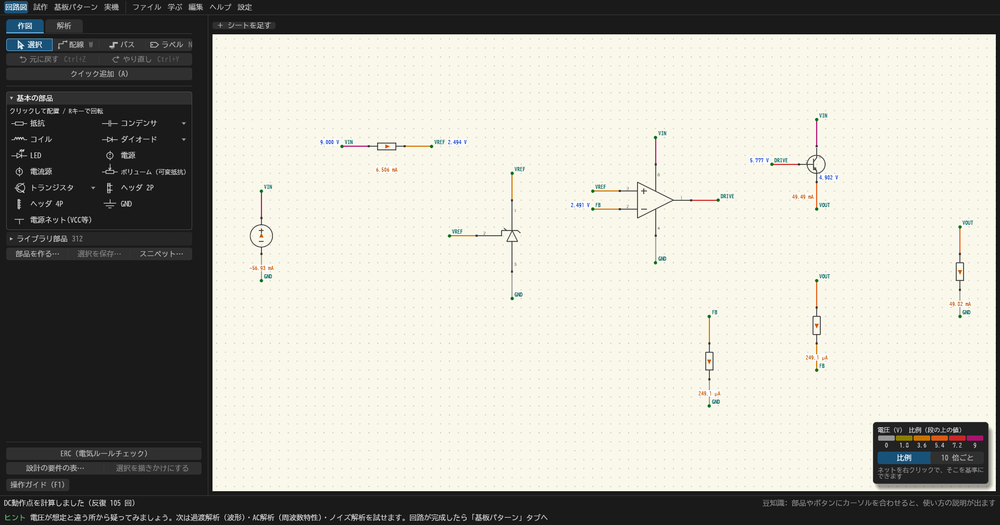
回路図の上に電圧(色)と電流(矢印)を重ねて表示
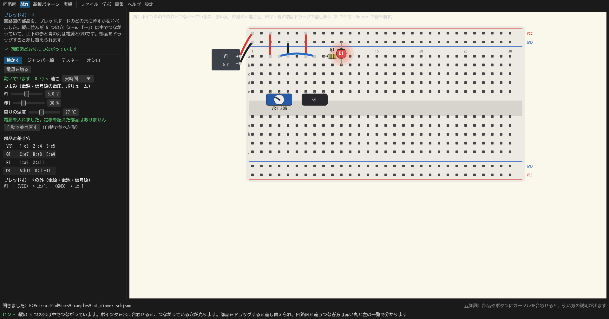
試作: ブレッドボードに差して動かす
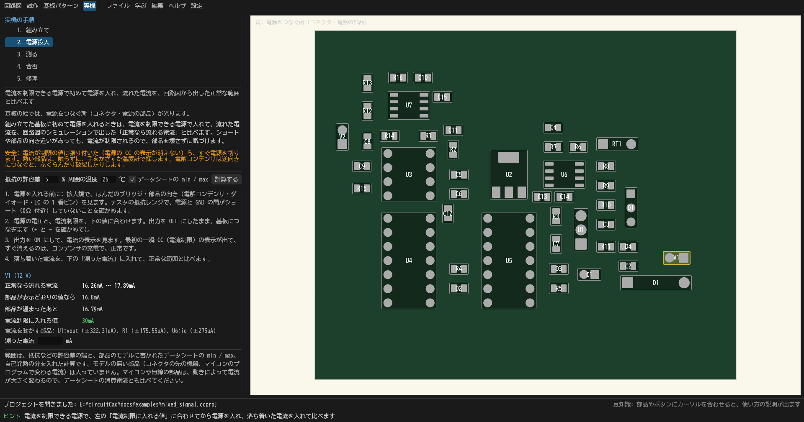
実機: 届いた基板の電源投入
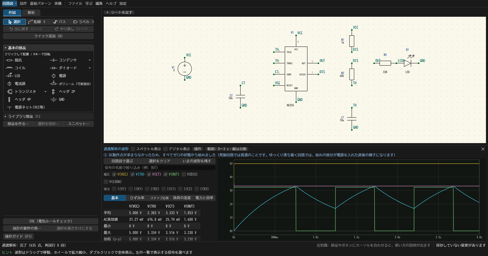
波形の測定カーソルとステップ応答の指標
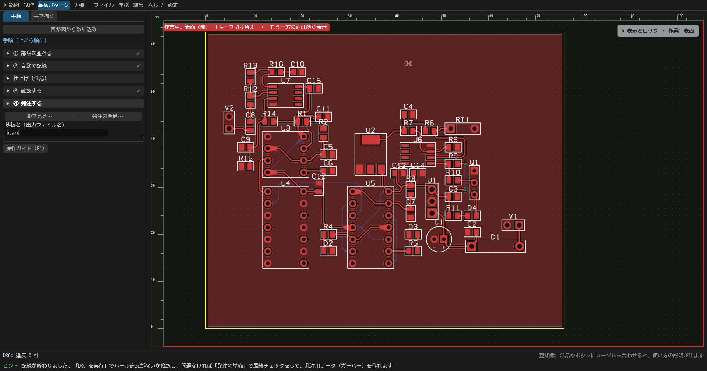
基板の配置・配線・DRC
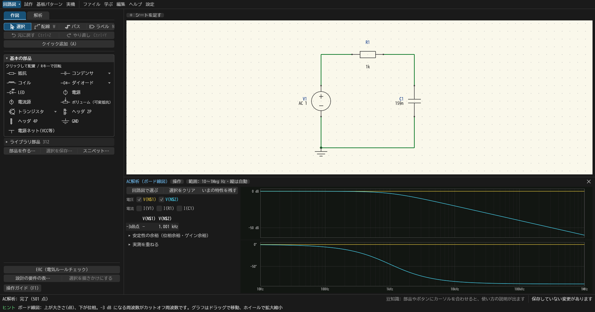
AC解析のボード線図
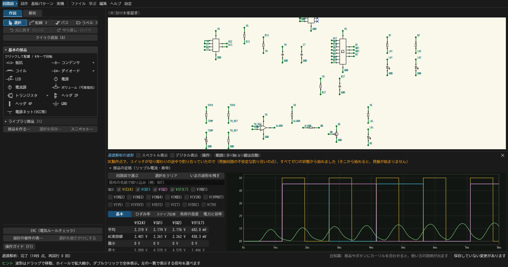
総合デモ(部品41個)の過渡解析。基板つきで同梱
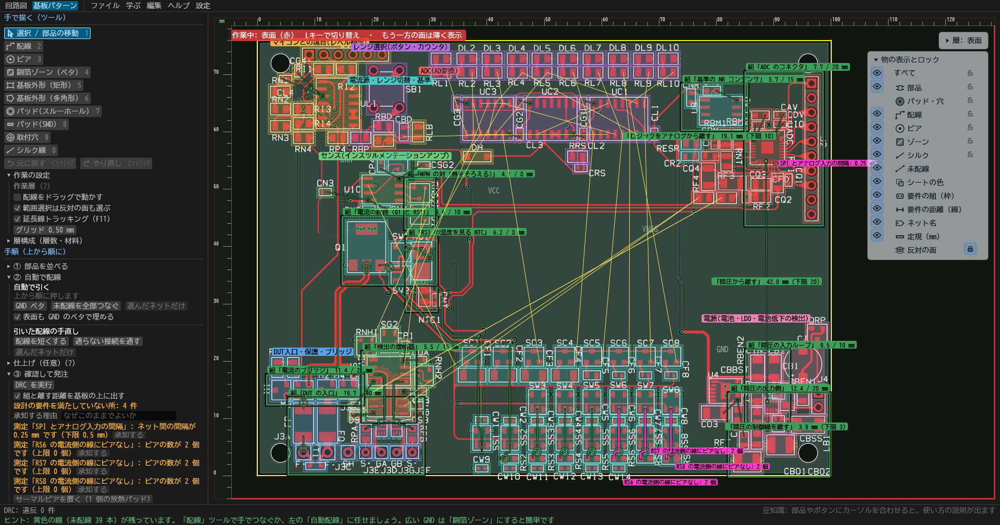
「設計の要件」を基板に取り込んで点検
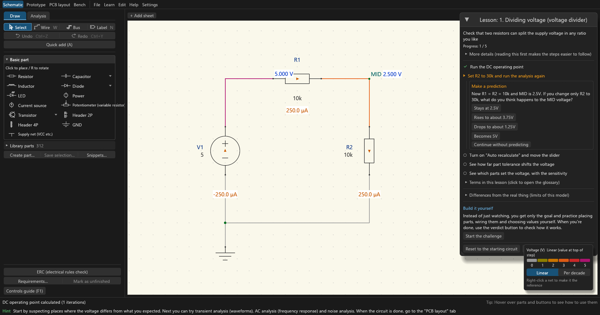
英語の画面 (レッスンと予測の問い)
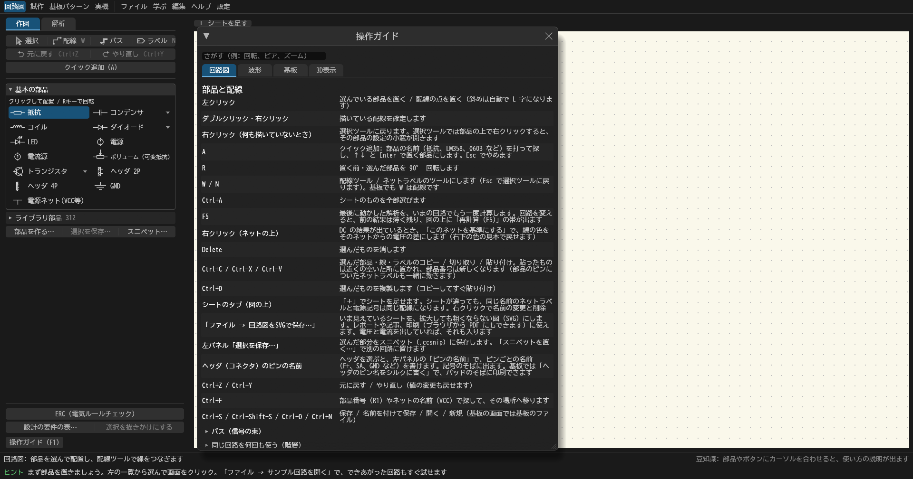
操作ガイド (F1)
3ステップで試す
- リリースページから zip をダウンロードして展開し、circuitCad.exe を起動します。
- 起動時のカードの「最初のレッスンを始める」を押します。最初はオームの法則で、手順どおりに押すとシミュレーション結果が回路図に重なって出ます。
- 慣れたら「学ぶ → 学習パス」で、安定化電源づくりに進みます。できあがった回路を先に見たいときは「ファイル → サンプル回路を開く」から。
回路図から基板の発注、届いた基板の電源投入までを 1 つの回路で通して見たいときは、はじめての1枚 (通し解説) をどうぞ。
既知の課題
アルファ版です。発注の前には、必ずご自身で確認してください。安全にかかわる設計 (医療・車載・高電圧・リチウム電池の充電器など) の根拠には使わないでください。
- 動作環境: 確認は Windows 10 / 11 が中心です。Linux 版は WSL2 (Ubuntu、GPU なし) で確かめただけで、macOS 版はまだありません (CI でビルドとテストは通っていますが、起動した人はいません)。
- 基板は、届いたところまで確かめました。 このソフトの Gerber・ドリルのデータで発注した基板が届き、パターンに不備はありませんでした。部品を載せて動かす確認はまだです。
- シミュレーションのモデルは単純化しています。 同梱のサンプルでは ngspice と合っていますが、実物との一致はまだ測っていません (精度のページ)。メーカーの SPICE モデルは一部の書き方しか読めません。
- 画面 (UI) は、改善の途中です。 いちばん力を入れて直している所で、配置・言葉づかい・アイコン、回路図と基板と各窓で見た目と操作をそろえることを、版ごとに進めています。ただ、まだ完全ではありません。文字や項目が多くて詰まったパネル、ほかと見た目がそろっていない画面、手数の多い操作が残っています。分かりにくかった所を教えてもらえると、とても助かります。
- 英語の画面は新しく、AI の助けで日本語から訳したものです。言い回しのおかしな所や、日本語のまま出る文が残っているかもしれません (試作のブレッドボードの穴の名前は、英語の画面でも日本語のままです)。
- データシートの絵の文字認識は Windows だけです。メーカーの SPICE モデルは再配布できないため同梱していません。
- 成熟したソフトと比べて足りないもの: 記号は四角い箱 (記号・フットプリントを絵で描く編集画面がない)、KiCad の基板・EAGLE の読み込み、面付け、明るい画面、ショートカットの変更。
- 1人と AI で作っているので、返事や修正に時間がかかることがあります。
今後の展望
だいたいこの順に進めます。初学者のつまずきを減らすものが先です。
次に
- 画面 (UI) の改善: 画面の文字を減らし、パネルを分かりやすくし、どこでも同じ見た目と操作にそろえる。初学者がつまずいた所から直す
- 評価基板: 小さな基板 (LDO・RC フィルタ・ダイオード) を作って測り、シミュレーションと比べて、モデルがどこまで合うかを示す
- 試作のタブの続き (使える部品を増やす、ブレッドボードの絵と操作の仕上げ)
- 3D の部品を実物の形に近づける。ケースの設計の続き (ねじ柱・コネクタの穴あけ位置)
- 店の型番を、店のページで確かめながら増やす
- 使ってみて困ったことの修正 (報告をお待ちしています)
その先
- タイミングの点検の続き
- 記号を絵で描く編集画面
- 部品の型番 (MPN)・実装しない (DNP) の欄、製造用の図面、部品表に在庫と値段
- 明るい画面、ショートカットの変更
候補の一覧は docs/candidates.md にあります。要望や不具合は Issues へどうぞ。